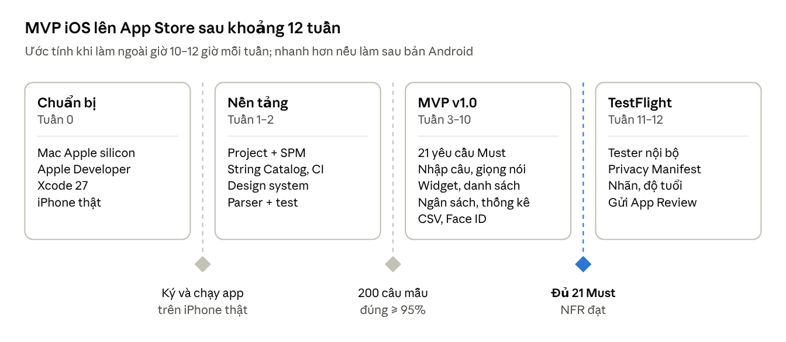

Đặc tả yêu cầu phần mềm – ChiNhanh iOS
1. Phạm vi và quan hệ với bản Android
Bản iOS dùng chung với bản Android phần phân tích thị trường, 36 yêu cầu chức năng, mô hình dữ liệu và luồng màn hình. Tài liệu này chỉ đặc tả phần khác, để hai bản không lệch nhau khi một bên thay đổi. Bản gốc: Đặc tả yêu cầu phần mềm – Sổ chi tiêu nhập bằng ngôn ngữ tự nhiên
| Phần | Quan hệ với bản Android | Ở đâu |
|---|---|---|
| Phân tích thị trường, điểm khác biệt | Dùng chung | Bản Android, mục 1–2 |
| Mục đích, thuật ngữ, chân dung người dùng | Dùng chung | Bản Android, mục 3–4 |
| Môi trường vận hành, ràng buộc | Riêng cho iOS | Mục 2 tài liệu này |
| 36 yêu cầu chức năng | Dùng chung mã và ý nghĩa; 17 FR có cách làm riêng | Bản Android mục 5, khác biệt ở mục 3 tài liệu này |
| Yêu cầu phi chức năng | Riêng cho iOS | Mục 4 tài liệu này |
| Mô hình dữ liệu | Dùng chung 8 thực thể, triển khai bằng SwiftData | Bản Android, mục 7 |
| Màn hình, luồng, wireframe | Dùng chung; khác biệt giao diện theo bảng trong tab Wireframe | Bản Android mục 8, tab Wireframe, canvas mockup hàng iOS |
| Tech stack | Riêng cho iOS | Mục 5 tài liệu này |
| Phát hành | Riêng cho iOS | Mục 6 tài liệu này |
Hai bản không đồng bộ dữ liệu với nhau. Thay vào đó, file sao lưu và CSV dùng chung một định dạng (NFR-16) để người dùng chuyển máy được.
2. Môi trường vận hành và ràng buộc
App target iOS 26.0 trở lên và build bằng Xcode 27 với SDK iOS 27. iOS 26 và iOS 27 hỗ trợ cùng dòng máy (iPhone 11 trở lên), nên chọn iOS 26 gần như không mất người dùng. Đổi lại, app dùng được Liquid Glass, Foundation Models và SpeechAnalyzer mà không phải viết nhánh cho bản cũ.
Môi trường vận hành
iPhone (chính) và iPad. Trên iPad, app hiện sidebar và bố cục danh sách cạnh chi tiết.
Tiếng Việt (mặc định) và tiếng Anh. Tiền tệ mặc định là VND.
Foundation Models chỉ có trên máy hỗ trợ Apple Intelligence và khi người dùng đã bật tính năng này. Máy không đủ điều kiện dùng bộ phân tích theo luật, giống bản Android.
Tính năng AI trên cloud (FR-11) cần iOS 27, vì protocol
LanguageModelcho mô hình cloud chỉ có từ iOS 27.
Ràng buộc phát triển
Cần Mac chip Apple silicon chạy macOS Tahoe 26.6 trở lên. Xcode 27 không chạy trên Mac Intel, Windows hay Linux.
Cần tài khoản Apple Developer Program và ít nhất một iPhone thật hỗ trợ Apple Intelligence để test FR-10.
Một lập trình viên, không có backend riêng, mọi tính năng Must chạy offline.
Ràng buộc App Store
Build bằng Xcode 26 trở lên với SDK iOS 26 trở lên (bắt buộc từ 28/4/2026).
Có file
PrivacyInfo.xcprivacy, khai lý do cho mọi required-reason API mà app và thư viện bên thứ ba dùng, ví dụUserDefaults.Trả lời bộ câu hỏi phân loại độ tuổi mới (5 mức: 4+, 9+, 13+, 16+, 18+). App không có nội dung nhạy cảm, dự kiến 4+.
Khai App Privacy trên App Store Connect đúng với thực tế.
Phát hành ở EU thì phải khai trạng thái trader theo DSA. Nếu chưa muốn khai, bỏ chọn các quốc gia EU khi phát hành.
Mỗi quyền hệ thống phải có chuỗi giải thích trong
Info.plist: micro, nhận dạng giọng nói, camera, Face ID.
Giả định
Người dùng muốn đồng bộ giữa iPhone và iPad đã đăng nhập iCloud.
Phần lớn người dùng không có Apple Intelligence, nên bộ phân tích theo luật vẫn là lõi, như bản Android.
3. Yêu cầu chức năng khác biệt trên iOS
17 trong 36 FR có cách làm khác trên iOS. 19 FR còn lại giữ nguyên cả yêu cầu lẫn tiêu chí chấp nhận. Độ ưu tiên (Must, Should, Could) giữ như bản Android. Khác biệt lớn nhất nằm ở FR-21 và FR-36: iOS không có cơ chế chạy nền chắc chắn như WorkManager.
| Mã | Khác gì so với Android | Cách làm trên iOS | Tiêu chí chấp nhận riêng cho iOS |
|---|---|---|---|
| FR-10 | Gemini Nano đổi thành Foundation Models | SystemLanguageModel với @Generable struct ParsedTransaction. Chỉ gọi khi mô hình sẵn sàng và hỗ trợ ngôn ngữ của câu nhập | Kết quả luôn là struct hợp lệ, không phải tự parse JSON. Quá 3 giây thì dùng kết quả theo luật |
| FR-11 | Firebase AI Logic đổi thành protocol LanguageModel (iOS 27) | Dùng Private Cloud Compute hoặc nhà cung cấp cloud qua cùng API. Mục cài đặt chỉ hiện trên iOS 27 | Tắt mặc định. App nói rõ chỉ gửi câu nhập |
| FR-13 | SpeechRecognizer đổi thành SpeechAnalyzer | SpeechTranscriber chạy trên máy. Nếu chưa có gói ngôn ngữ vi-VN thì dùng SFSpeechRecognizer với locale vi-VN | Văn bản đi qua FR-01 đến FR-08 như bản Android |
| FR-14 | Glance đổi thành WidgetKit | Widget nhỏ và vừa trên Màn hình chính, widget màn hình khóa. Nút "+" là Button(intent:) mở Nhập nhanh | App gọi WidgetCenter.reloadTimelines sau mỗi lần lưu. Số trên widget khớp với app khi quay về Màn hình chính |
| FR-15 | Ô Cài đặt nhanh và App shortcuts đổi thành Control, Quick Actions, App Shortcuts | ControlWidget trong Control Center; Quick Actions khi nhấn giữ icon; App Shortcut "Ghi chi tiêu" viết bằng App Intents | Mọi lối tắt mở thẳng sheet Nhập nhanh. App Shortcut hiện trong Spotlight, app Phím tắt và gán được cho nút Tác vụ |
| FR-16 | Share target đổi thành Share Extension | Extension nhận văn bản và ảnh, OCR bằng Vision, chuyển nháp sang app qua App Group | Ảnh màn hình chuyển khoản cho ra nháp có số tiền, nội dung và thời gian |
| FR-17 | ML Kit đổi thành VisionKit và Vision | Camera quét tài liệu của VisionKit, nhận dạng bằng RecognizeDocumentsRequest | Lấy được dòng tổng tiền; chỉ xin quyền camera khi người dùng bấm quét |
| FR-20 | Room có FTS4, SwiftData không có tìm kiếm toàn văn | #Predicate với localizedStandardContains trên note và rawInput. Nếu chậm hơn tiêu chí bên cạnh thì chuyển riêng phần tìm kiếm sang GRDB với FTS5 | Tìm phở trả kết quả trong tối đa 300 ms với 10.000 giao dịch |
| FR-21 | Không có cơ chế chạy nền chắc chắn như WorkManager | Tạo các giao dịch định kỳ đến hạn mỗi khi app mở hoặc quay lại foreground. BGAppRefreshTask chạy thêm khi hệ thống cho phép. Đặt thông báo cục bộ vào ngày đến hạn | Mở app sau nhiều ngày, mọi giao dịch định kỳ bị lỡ được tạo đủ, mang đúng ngày gốc và không trùng lặp |
| FR-26 | Thông báo Android đổi thành thông báo cục bộ | Kiểm tra ngưỡng 80% và 100% ngay khi lưu giao dịch, gửi qua UNUserNotificationCenter; không cần chạy nền | Như bản Android |
| FR-29 | Gemini Nano đổi thành Foundation Models có tool calling | Mô hình gọi tool querySpending(category, period) chạy truy vấn SwiftData. Không có Apple Intelligence thì dùng bộ nhận diện câu hỏi theo luật | Con số trả về khớp với màn hình Thống kê |
| FR-30 | Storage Access Framework đổi thành ShareLink và fileExporter | Người dùng lưu vào app Tệp hoặc gửi qua app khác | CSV UTF-8 có BOM, mở đúng tiếng Việt trong Excel và Numbers |
| FR-31 | Google Drive đổi thành iCloud | Đồng bộ tự động giữa iPhone và iPad bằng SwiftData với CloudKit (private database). Mọi thuộc tính của model phải optional hoặc có giá trị mặc định, không dùng ràng buộc unique. Thêm sao lưu thủ công ra file mã hóa | Giao dịch tạo trên iPhone hiện trên iPad cùng Apple ID. File sao lưu khôi phục được trên cả bản Android (NFR-16) |
| FR-32 | BiometricPrompt đổi thành LocalAuthentication | LAContext với chính sách .deviceOwnerAuthentication: Face ID hoặc Touch ID, dự phòng bằng mật mã máy | Như bản Android |
| FR-33 | iOS chụp ảnh app lúc chuyển sang nền | Phủ màn che khi scenePhase chuyển sang .inactive | Ảnh trong trình chuyển app không lộ số tiền |
| FR-35 | Ngôn ngữ riêng của app được chọn trong app Cài đặt của iOS; iOS không có Dynamic Color | Nút trong app mở trang cài đặt của app. Dùng màu nhấn thương hiệu cố định, hỗ trợ sáng và tối | Đổi ngôn ngữ trong Cài đặt iOS thì app hiện đúng ngôn ngữ khi mở lại |
| FR-36 | iOS không kiểm tra điều kiện được lúc thông báo bắn | Đặt thông báo lặp hằng ngày. Khi có giao dịch đầu tiên trong ngày, hủy thông báo hôm nay và đặt lại từ ngày mai | Không nhận nhắc vào ngày đã ghi giao dịch |
4. Yêu cầu phi chức năng cho iOS
Mục tiêu giữ nguyên như bản Android, chỉ đổi công cụ đo. NFR-16 là yêu cầu mới, áp dụng cho cả hai bản.
| Mã | Nhóm | Yêu cầu | Cách đo trên iOS |
|---|---|---|---|
| NFR-01 | Hiệu năng | Khởi động lạnh ≤ 1 giây trên iPhone 11 | XCTApplicationLaunchMetric, Instruments App Launch; số liệu thật qua MetricKit |
| NFR-02 | Hiệu năng | Bộ phân tích theo luật xử lý một câu ≤ 50 ms | Test đo thời gian trên bộ 200 câu mẫu dùng chung với Android |
| NFR-03 | Hiệu năng | Cuộn danh sách 10.000 giao dịch không giật | Instruments: SwiftUI instrument và Hitches |
| NFR-04 | Kích thước | Dung lượng tải về ≤ 20 MB | Báo cáo kích thước app trên App Store Connect |
| NFR-05 | Ổn định | Người dùng không gặp crash ≥ 99,5% | Xcode Organizer và MetricKit |
| NFR-06 | Toàn vẹn dữ liệu | Số tiền lưu bằng số nguyên Int64 theo đơn vị đồng, không dùng Double. Thay đổi schema SwiftData có VersionedSchema và migration plan | Unit test cho từng migration |
| NFR-07 | Bảo mật | Dữ liệu nằm trong sandbox với Data Protection. File sao lưu mã hóa AES-256-GCM bằng CryptoKit, khóa sinh từ mật khẩu sao lưu bằng PBKDF2-HMAC-SHA256 (CommonCrypto), cùng định dạng với bản Android | File sao lưu không đọc được khi thiếu mật khẩu |
| NFR-08 | Quyền riêng tư | Không SDK quảng cáo hay theo dõi, không cần App Tracking Transparency. Privacy Manifest khai đủ required-reason API | Nhãn App Privacy khớp thực tế; app được duyệt mà không bị hỏi lại về quyền riêng tư |
| NFR-09 | Quyền hệ thống | Chỉ xin micro, nhận dạng giọng nói, camera, thông báo và Face ID, đúng lúc cần dùng | Rà soát Info.plist |
| NFR-10 | Offline | 100% yêu cầu Must hoạt động khi không có mạng | Test thủ công ở chế độ máy bay |
| NFR-11 | Khả năng truy cập | VoiceOver đọc được mọi phần tử. Dynamic Type đến cỡ chữ lớn nhất không vỡ bố cục. Vùng chạm ≥ 44 pt. Tôn trọng Reduce Motion và Reduce Transparency (Liquid Glass chuyển sang nền đặc) | Accessibility Inspector; khai Accessibility Nutrition Labels trên App Store Connect |
| NFR-12 | Đa ngôn ngữ | Mọi chuỗi nằm trong String Catalog, tiếng Việt và tiếng Anh. Tiền định dạng bằng FormatStyle theo locale | Snapshot test cho cả hai ngôn ngữ |
| NFR-13 | Tương thích | iOS 26 trở lên, iPhone và iPad, mọi hướng xoay trên iPad, sáng và tối | Test trên simulator iPhone SE, iPhone cỡ lớn và iPad |
| NFR-14 | Bảo trì | Swift 6 language mode với strict concurrency. Độ phủ test ≥ 80% cho package parser và domain. CI chạy build, test và lint trên mỗi pull request | Báo cáo coverage của Xcode trong CI |
| NFR-15 | Pin | Ngoài BGAppRefreshTask không chạy nền, không dùng vị trí | Báo cáo Energy trong Xcode Organizer |
| NFR-16 | Tương thích chéo | File sao lưu và CSV cùng định dạng với bản Android | Sao lưu trên iOS rồi khôi phục trên Android (và ngược lại) ra đúng số giao dịch và số dư |
5. Tech stack iOS
Tầng nào bên Android cũng có công nghệ tương ứng trên iOS, nên kiến trúc UDF và cách chia module giữ nguyên. Cột giữa là công nghệ bạn sẽ dùng bên Android, để đối chiếu khi chuyển qua lại.
| Tầng | iOS | Tương ứng Android | Dùng cho |
|---|---|---|---|
| Ngôn ngữ | Swift 6.4, Swift 6 language mode, approachable concurrency, mặc định MainActor | Kotlin 2.x, Coroutines | Toàn bộ |
| UI | SwiftUI, Liquid Glass | Jetpack Compose, Material 3 Expressive | Mọi màn hình |
| Bố cục thích ứng | NavigationSplitView, TabView với .sidebarAdaptable | material3-adaptive | NFR-13 |
| Điều hướng | NavigationStack với path dạng giá trị | Navigation 3 | Điều hướng giữa các màn hình |
| State | View model @Observable, @State, @Environment | ViewModel, StateFlow | Mọi màn hình |
| Bất đồng bộ | async/await, AsyncSequence, actor | Coroutines, Flow | Toàn bộ |
| DI | Environment của SwiftUI và truyền qua init; swift-dependencies nếu cần | Hilt | Toàn bộ |
| Database | SwiftData (@Model, @Query, #Predicate); GRDB cho tìm kiếm nếu cần | Room | FR-18 đến FR-29 |
| Cấu hình | @AppStorage | DataStore | FR-35 |
| Chạy nền | BGTaskScheduler và xử lý lúc mở app | WorkManager | FR-21, FR-31, FR-36 |
| Widget | WidgetKit, App Intents | Glance | FR-14 |
| Lối tắt | ControlWidget, Quick Actions, App Shortcuts | TileService, ShortcutManagerCompat | FR-15 |
| Chia sẻ vào app | Share Extension, App Group | Share target | FR-16 |
| Giọng nói | SpeechAnalyzer; dự phòng SFSpeechRecognizer | SpeechRecognizer | FR-13 |
| OCR | Vision, VisionKit | ML Kit | FR-16, FR-17 |
| AI trên máy | Foundation Models (@Generable, tool calling) | Gemini Nano | FR-10, FR-29 |
| AI trên cloud | Protocol LanguageModel (iOS 27) | Firebase AI Logic | FR-11 |
| Biểu đồ | Swift Charts | Vico, biểu đồ tròn tự vẽ bằng Canvas | FR-27, FR-28 |
| Bảo mật | LocalAuthentication, CryptoKit, Keychain | androidx.biometric, javax.crypto | FR-32, FR-33, NFR-07 |
| Đồng bộ, sao lưu | SwiftData với CloudKit, file trong iCloud Drive | Google Drive appDataFolder | FR-31 |
| Serialization | Codable | kotlinx.serialization | File sao lưu, NFR-16 |
| Đa ngôn ngữ | String Catalog | strings.xml | NFR-12 |
| Build, module | Xcode 27, Swift Package Manager (local package) | Gradle, Version Catalog, convention plugins | Toàn bộ |
| Chất lượng mã | SwiftLint hoặc swift-format | Detekt, Spotless | NFR-14 |
| Kiểm thử | Swift Testing, XCUITest, swift-snapshot-testing, App Intents Testing (iOS 27) | JUnit, Turbine, Compose UI Test, Roborazzi | NFR-11 đến NFR-14 |
| Hiệu năng | Instruments, XCTMetric, MetricKit | Macrobenchmark, Baseline Profile | NFR-01 đến NFR-04 |
| Giám sát | Xcode Organizer, MetricKit | Crashlytics, Android vitals | NFR-05 |
| CI/CD | Xcode Cloud hoặc GitHub Actions với fastlane; TestFlight | GitHub Actions, Gradle Play Publisher | NFR-14, phát hành |
Cấu trúc dự kiến: target App, WidgetExtension, ShareExtension; các local package Features/{QuickAdd, Transactions, Budget, Stats, Settings} và Core/{Parser, Model, Data, DesignSystem, Testing}. Package Parser viết bằng Swift thuần, không phụ thuộc UI. Bộ 200 câu mẫu và từ điển từ khóa lưu dạng JSON, dùng chung cho cả hai bản, để hai bộ phân tích cho cùng kết quả.
6. Phạm vi phát hành và quy trình App Store
MVP iOS gồm đúng 21 yêu cầu Must như bản Android, v1.1 gồm 13 yêu cầu Should. Khác Google Play, App Store không bắt buộc chạy thử với 12 tester trong 14 ngày, nhưng mọi bản phát hành đều phải qua App Review.

TestFlight cho tối đa 100 tester nội bộ mà không cần duyệt. Tester bên ngoài (tối đa 10.000 người) chỉ cài được sau khi bản build qua Beta App Review.
Việc cần xong trước khi gửi App Review
PrivacyInfo.xcprivacykhai đủ required-reason APINhãn App Privacy trên App Store Connect khớp với thực tế
Trả lời bộ câu hỏi phân loại độ tuổi mới
Khai mã hóa (export compliance): app chỉ dùng mã hóa chuẩn của hệ thống để bảo vệ dữ liệu
Ảnh chụp màn hình iPhone 6,9 inch và iPad 13 inch, tiếng Việt và tiếng Anh
URL chính sách quyền riêng tư và URL hỗ trợ
Ghi chú cho reviewer: app không cần đăng nhập, AI chạy trên máy, cách thử nhập bằng câu
Quyết định có phát hành ở EU không; nếu có, khai trạng thái trader
Nguồn
Tra cứu tháng 10/2026.